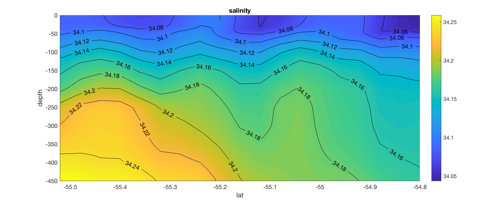
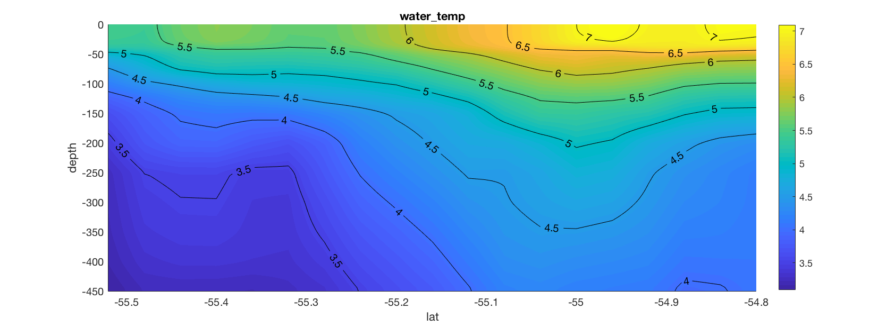
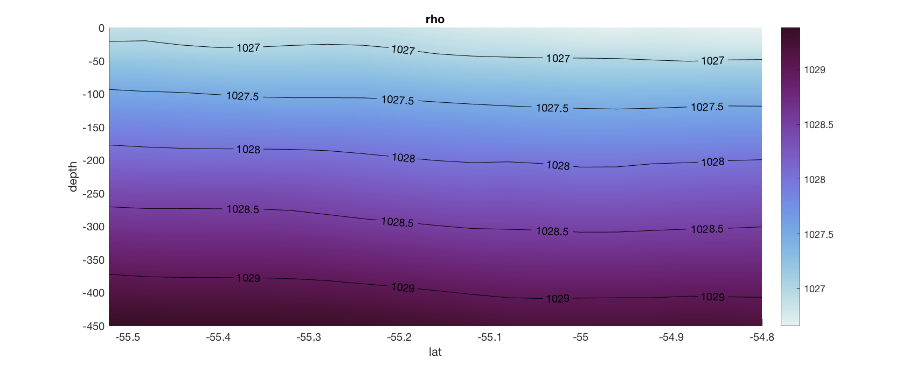

GSW Example
% Using ocean_data_tools, build a uniform struct from HYCOM and subset to upper 450 meters:
[hycom] = model_build_profiles(source,date,variable_list,xcoords,ycoords,zgrid);
[hycom] = general_depth_subset(hycom,[0 450]);
% Using ocean_data_tools, plot temperature and salinity sections:
general_section(hycom,'water_temp','lat','depth',1,1)
general_section(hycom,'salinity','lat','depth',1,1)


% Using GSW, append the struct with absolute salinity, conservative temperature, and density:
[hycom.SA, ~] = gsw_SA_from_SP(hycom.salinity,-hycom.depth,hycom.lon,hycom.lat);
hycom.CT = gsw_CT_from_t(hycom.SA,hycom.water_temp,-hycom.depth);
hycom.rho = gsw_rho(hycom.SA,hycom.CT,-hycom.depth);
% Using ocean_data_tools, plot a density section:
general_section(hycom,'rho','lat','depth',1,1)
